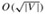

|
|
< Day Day Up > |
|
As with graphs, there are many related, but slightly different, notions of trees. This section presents definitions and mathematical properties of several kinds of trees. Sections 10.4 and 22.1 describe how trees can be represented in a computer memory.
As defined in Section B.4, a free tree is a connected, acyclic, undirected graph. We often omit the adjective "free" when we say that a graph is a tree. If an undirected graph is acyclic but possibly disconnected, it is a forest. Many algorithms that work for trees also work for forests. Figure B.4(a) shows a free tree, and Figure B.4(b) shows a forest. The forest in Figure B.4(b) is not a tree because it is not connected. The graph in Figure B.4(c) is neither a tree nor a forest, because it contains a cycle.
The following theorem captures many important facts about free trees.
Let G = (V, E) be an undirected graph. The following statements are equivalent.
G is a free tree.
Any two vertices in G are connected by a unique simple path.
G is connected, but if any edge is removed from E, the resulting graph is disconnected.
G is connected, and |E| = |V | - 1.
G is acyclic, and |E| = |V | - 1.
G is acyclic, but if any edge is added to E, the resulting graph contains a cycle.
Proof (1) ⇒ (2): Since a tree is connected, any two vertices in G are connected by at least one simple path. Let u and v be vertices that are connected by two distinct simple paths p1 and p2, as shown in Figure B.5. Let w be the vertex at which the paths first diverge; that is, w is the first vertex on both p1 and p2 whose successor on p1 is x and whose successor on p2 is y, where x ≠ y. Let z be the first vertex at which the paths reconverge; that is, z is the first vertex following w on p1 that is also on p2. Let p' be the subpath of p1 from w through x to z, and let p'' be the subpath of p2 from w through y to z. Paths p' and p" share no vertices except their endpoints. Thus, the path obtained by concatenating p' and the reverse of p" is a cycle. This contradicts our assumption that G is a tree. Thus, if G is a tree, there can be at most one simple path between two vertices.
(2) ⇒ (3): If any two vertices in G are connected by a unique simple path, then G is connected. Let (u, v) be any edge in E. This edge is a path from u to v, and so it must be the unique path from u to v. If we remove (u, v) from G, there is no path from u to v, and hence its removal disconnects G.
(3) ⇒ (4): By assumption, the graph G is connected, and by Exercise B.4-3, we have |E| ≥ |V | - 1. We shall prove |E| ≤ |V | - 1 by induction. A connected graph with n = 1 or n = 2 vertices has n - 1 edges. Suppose that G has n ≥ 3 vertices and that all graphs satisfying (3) with fewer than n vertices also satisfy |E| ≤ |V| - 1. Removing an arbitrary edge from G separates the graph into k ≥ 2 connected components (actually k = 2). Each component satisfies (3), or else G would not satisfy (3). Thus, by induction, the number of edges in all components combined is at most |V | - k ≤ |V | - 2. Adding in the removed edge yields |E| ≤ |V| - 1.
(4) ⇒ (5): Suppose that G is connected and that |E| = |V | - 1. We must show that G is acyclic. Suppose that G has a cycle containing k vertices v1, v2,..., vk, and without loss of generality assume that this cycle is simple. Let Gk = (Vk, Ek) be the subgraph of G consisting of the cycle. Note that |Vk| = |Ek| = k. If k < |V|, there must be a vertex vk+1 ∈ V - Vk that is adjacent to some vertex vi ∈ Vk, since G is connected. Define Gk+1 = (Vk+1, Ek+1) to be the subgraph of G with Vk+1 = Vk ∪ {vk+1} and Ek+1 = Ek ∪ {(vi, vk+1)}. Note that |Vk+1| = |Ek+1| = k + 1. If k + 1 < |V|, we can continue, defining Gk+2 in the same manner, and so forth, until we obtain Gn = (Vn, En), where n = |V|, Vn = V, and |En| = |Vn| = |V|. Since Gn is a subgraph of G, we have En ⊆ E, and hence |E| ≥ |V|, which contradicts the assumption that |E| = |V | - 1. Thus, G is acyclic.
(5) ⇒ (6): Suppose that G is acyclic and that |E| = |V|-1. Let k be the number of connected components of G. Each connected component is a free tree by definition, and since (1) implies (5), the sum of all edges in all connected components of G is |V| - k. Consequently, we must have k = 1, and G is in fact a tree. Since (1) implies (2), any two vertices in G are connected by a unique simple path. Thus, adding any edge to G creates a cycle.
(6) ⇒ (1): Suppose that G is acyclic but that if any edge is added to E, a cycle is created. We must show that G is connected. Let u and v be arbitrary vertices in G. If u and v are not already adjacent, adding the edge (u, v) creates a cycle in which all edges but (u, v) belong to G. Thus, there is a path from u to v, and since u and v were chosen arbitrarily, G is connected.
A rooted tree is a free tree in which one of the vertices is distinguished from the others. The distinguished vertex is called the root of the tree. We often refer to a vertex of a rooted tree as a node[4] of the tree. Figure B.6(a) shows a rooted tree on a set of 12 nodes with root 7.
Consider a node x in a rooted tree T with root r. Any node y on the unique path from r to x is called an ancestor of x. If y is an ancestor of x, then x is a descendant of y. (Every node is both an ancestor and a descendant of itself.) If y is an ancestor of x and x ≠ y, then y is a proper ancestor of x and x is a proper descendant of y. The subtree rooted at x is the tree induced by descendants of x, rooted at x. For example, the subtree rooted at node 8 in Figure B.6(a) contains nodes 8, 6, 5, and 9.
If the last edge on the path from the root r of a tree T to a node x is (y, x), then y is the parent of x, and x is a child of y. The root is the only node in T with no parent. If two nodes have the same parent, they are siblings. A node with no children is an external node or leaf. A nonleaf node is an internal node.
The number of children of a node x in a rooted tree T is called the degree of x.[5] The length of the path from the root r to a node x is the depth of x in T. The height of a node in a tree is the number of edges on the longest simple downward path from the node to a leaf, and the height of a tree is the height of its root. The height of a tree is also equal to the largest depth of any node in the tree.
An ordered tree is a rooted tree in which the children of each node are ordered. That is, if a node has k children, then there is a first child, a second child,..., and a kth child. The two trees in Figure B.6 are different when considered to be ordered trees, but the same when considered to be just rooted trees.
Binary trees are defined recursively. A binary tree T is a structure defined on a finite set of nodes that either
contains no nodes, or
is composed of three disjoint sets of nodes: a root node, a binary tree called its left subtree, and a binary tree called its right subtree.
The binary tree that contains no nodes is called the empty tree or null tree, sometimes denoted NIL. If the left subtree is nonempty, its root is called the left child of the root of the entire tree. Likewise, the root of a nonnull right subtree is the right child of the root of the entire tree. If a subtree is the null tree NIL, we say that the child is absent or missing. Figure B.7(a) shows a binary tree.
A binary tree is not simply an ordered tree in which each node has degree at most 2. For example, in a binary tree, if a node has just one child, the position of the child-whether it is the left child or the right child-matters. In an ordered tree, there is no distinguishing a sole child as being either left or right. Figure B.7(b) shows a binary tree that differs from the tree in Figure B.7(a) because of the position of one node. Considered as ordered trees, however, the two trees are identical.
The positioning information in a binary tree can be represented by the internal nodes of an ordered tree, as shown in Figure B.7(c). The idea is to replace each missing child in the binary tree with a node having no children. These leaf nodes are drawn as squares in the figure. The tree that results is a full binary tree: each node is either a leaf or has degree exactly 2. There are no degree-1 nodes. Consequently, the order of the children of a node preserves the position information.
The positioning information that distinguishes binary trees from ordered trees can be extended to trees with more than 2 children per node. In a positional tree, the children of a node are labeled with distinct positive integers. The ith child of a node is absent if no child is labeled with integer i. A k-ary tree is a positional tree in which for every node, all children with labels greater than k are missing. Thus, a binary tree is a k-ary tree with k = 2.
A complete k-ary tree is a k-ary tree in which all leaves have the same depth and all internal nodes have degree k. Figure B.8 shows a complete binary tree of height 3. How many leaves does a complete k-ary tree of height h have? The root has k children at depth 1, each of which has k children at depth 2, etc. Thus, the number of leaves at depth h is kh. Consequently, the height of a complete k-ary tree with n leaves is logk n. The number of internal nodes of a complete k-ary tree of height h is
by equation (A.5). Thus, a complete binary tree has 2h - 1 internal nodes.
Draw all the free trees composed of the 3 vertices A, B, and C. Draw all the rooted trees with nodes A, B, and C with A as the root. Draw all the ordered trees with nodes A, B, and C with A as the root. Draw all the binary trees with nodes A, B, and C with A as the root.
Let G = (V, E) be a directed acyclic graph in which there is a vertex v0 ∈ V such that there exists a unique path from v0 to every vertex v ∈ V. Prove that the undirected version of G forms a tree.
Show by induction that the number of degree-2 nodes in any nonempty binary tree is 1 less than the number of leaves.
Use induction to show that a nonempty binary tree with n nodes has height at least ⌊lg n⌋.
The internal path length of a full binary tree is the sum, taken over all internal nodes of the tree, of the depth of each node. Likewise, the external path length is the sum, taken over all leaves of the tree, of the depth of each leaf. Consider a full binary tree with n internal nodes, internal path length i, and external path length e. Prove that e = i + 2n.
Let us associate a "weight" w(x) = 2-d with each leaf x of depth d in a binary tree T. Prove that Σx w(x) ≤ 1, where the sum is taken over all leaves x in T. (This is known as the Kraft inequality.)
Show that every binary tree with L leaves contains a subtree having between L/3 and 2L/3 leaves, inclusive.
Given an undirected graph G = (V, E), a k-coloring of G is a function c : V → {0,1,...,k - 1} such that c(u) ≠ c(v) for every edge (u, v) ∈ E. In other words, the numbers 0, 1,..., k - 1 represent the k colors, and adjacent vertices must have different colors.
Show that any tree is 2-colorable.
Show that the following are equivalent:
G is bipartite.
G is 2-colorable.
G has no cycles of odd length.
Let d be the maximum degree of any vertex in a graph G. Prove that G can be colored with d + 1 colors.
Show that if G has O(|V|) edges, then G can be colored with  colors.
Reword each of the following statements as a theorem about undirected graphs, and then prove it. Assume that friendship is symmetric but not reflexive.
In any group of n ≥ 2 people, there are two people with the same number of friends in the group.
Every group of six people contains either three mutual friends or three mutual strangers.
Any group of people can be partitioned into two subgroups such that at least half the friends of each person belong to the subgroup of which that person is not a member.
If everyone in a group is the friend of at least half the people in the group, then the group can be seated around a table in such a way that everyone is seated between two friends.
Many divide-and-conquer algorithms that operate on graphs require that the graph be bisected into two nearly equal-sized subgraphs, which are induced by a partition of the vertices. This problem investigates bisections of trees formed by removing a small number of edges. We require that whenever two vertices end up in the same subtree after edges are removed, then they must be in the same partition.
Show that by removing a single edge, we can partition the vertices of any n-vertex binary tree into two sets A and B such that |A| ≤ 3n/4 and |B| ≤ 3n/4.
Show that the constant 3/4 in part (a) is optimal in the worst case by giving an example of a simple binary tree whose most evenly balanced partition upon removal of a single edge has |A| = 3n/4.
Show that by removing at most O(lg n) edges, we can partition the vertices of any n-vertex binary tree into two sets A and B such that |A| = ⌊n/2⌋ and |B| = ⌈n/2⌉.
[4]The term "node" is often used in the graph theory literature as a synonym for "vertex." We shall reserve the term "node" to mean a vertex of a rooted tree.
[5]Notice that the degree of a node depends on whether T is considered to be a rooted tree or a free tree. The degree of a vertex in a free tree is, as in any undirected graph, the number of adjacent vertices. In a rooted tree, however, the degree is the number of children-the parent of a node does not count toward its degree.
|
|
< Day Day Up > |
|